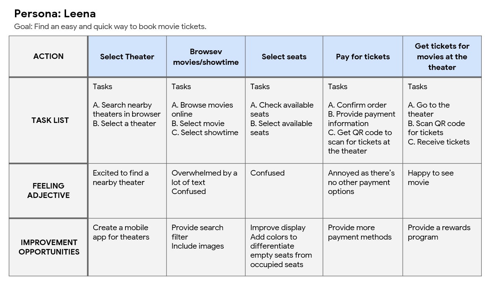

Design a website and app for Bunny Cinema that allows users to easily book/check available showtimes, seats and movies online. For this project, we decided to use a goal-directed design method which revolves around focusing on our personas and goals.
1. Create a minimalistic UI while keeping product as the focus.
2. Provide a seamless and linear purchasing experience.
I started out by asking myself some key questions.
"What is the product and who is it for?"
"Who do we see as our biggest competitors?"
"What challenges could we face moving forward?"
"Which users are the most important to the business?"
Productivity: The line is long and it’s a waste of time to queue up only to find out seats and showtimes are fully booked.
Financial: Lack of payment options.
Support: Unable to check available seats/showtimes in advance.
Mapping Leena’s user journey revealed how helpful it would be for users to have access to a dedicated Bunny Cinema app.

Dedicated Mobile App Version (Figma)
Responsive Website Version (Adobe XD)

Dedicated Mobile App Version (Figma)


Website Version (Adobe XD)
The Impact: The app makes users feel like Bunny Cinema really thinks about how to meet their needs.
What I learned: While designing the Bunny Cinema app, I learned that the first ideas for the app are only the beginning of the process. Usability studies and peer feedback influenced each iteration of the app’s designs.
Thank you for your time reviewing my work on the Bunny Cinema app! If you would like to see more or get in touch, my contact information is provided below.
Email: catherinelu96@gmail.com
Phone: 0777808688